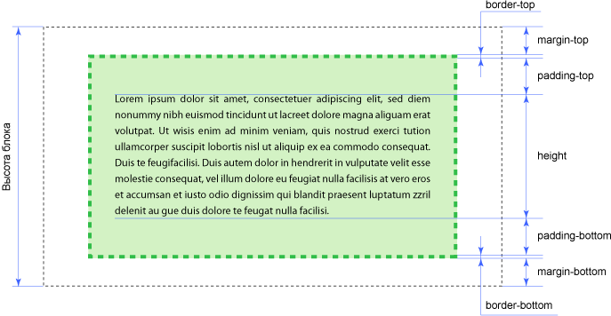
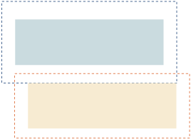
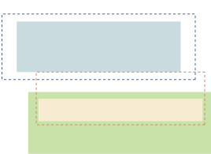

Основи блочного верстання документів
Активное применение тега <div>
При блоковій верстці істотне значення приділяється універсальному тегу <div>, який виконує безліч функцій. Фактично це основа, на яку «навішуються» стилі. Звісно, це не означає, що застосовується тільки один цей тег, адже потрібно і малюнки вставляти і оформляти текст. Але при верстці за допомогою блоків тег <div> є цеглинкою верстки, її базовим фундаментом.
Завдяки цьому тегу HTML-код розпадається на ряд чітких наочних блоків, код при цьому виходить більш компактним, ніж при табличній верстці, до того ж пошукові системи його краще індексують.
Таблиці застосовуються тільки для представлення табличних даних
При блоковій верстці, звичайно ж, використовуються таблиці, але тільки в тих випадках, коли вони потрібні, наприклад, для наочного відображення чисел та інших табличних даних. Варіант, коли від таблиць пропонується відмовитися взагалі, є недоцільним і, більш того, шкідливим.
У HTML5 додано кілька нових тегів розмітки для позначення різних типових блоків сторінки. Приміром, <header> і <footer> використовуються для створення «шапки» і «підвалу», <nav> для навігації, <aside> для бічної панелі. Увімкнення в специфікацію HTML подібних елементів покликане знизити домінування тега <div> і надання більшого сенсу розмітці. Тому у верстці на HTML5 активно застосовується термін «елемент», під яким мається на увазі відповідний тег і елемент який він створює.
Викладені вище принципи блочної верстки при цьому зберігаються за винятком того моменту, що <div> в деяких випадках замінюється більш осмисленими тегами.
Будь-який блоковий елемент складається з набору властивостей, що накладаються один на одного. Основою блоку виступає його контент (це може бути текст, зображення тощо), ширина якого задається властивістю width, а висота через height; навколо контенту йдуть внутрішні поля (padding), вони створюють порожній простір від контенту до внутрішнього краю рамки, потім йдуть власне сама рамка (border) і завершують блок зовнішні відступи (margin), невидимий порожній простір від зовнішнього краю рамки. Порядок впливу цих властивостей на блок чітко визначений і не може бути порушений. На малюнку зображений блок у вигляді набору цих властивостей.

Поля
Полем будемо називати відстань від внутрішнього краю рамки або краю блоку до уявного прямокутника, що обмежує вміст блоку. Через те, що значення полів можуть відрізнятися на кожній стороні, застосовують виразу «верхнє поле» або «поле зверху», і їм подібні для інших сторін. Позначення «поля» слід розуміти як однакове значення полів для всіх сторін. Основне призначення полів - створити порожній простір навколо вмісту блочного елемента, наприклад тексту, щоб він не прилягав щільно до краю елемента. Використання полів підвищує читабельність тексту і покращує зовнішній вигляд сторінки. У прикладі показано використання полів для оформлення тексту.
<style type="text/css">
.space {
padding: 20px; /* Поля */
background: #E5D3BD; /* Цвет фона */
border: 2px solid #E81E25; /* Параметры рамки */
}
</style>
<div class="space">
Далеко-далеко, в той стране, куда улетают от нас на зиму ласточки, жил король.
У него было одиннадцать сыновей и одна дочка, Элиза.
</div>
Рамки
Рамки це лінії навколо полів елемента на одній, двох, трьох або всіх чотирьох його сторонах. У кожної лінії є товщина, стиль і колір. Для створення рамки застосовується універсальна властивість border, що одночасно задає всі ці параметри, а для створення ліній на окремих сторонах елемента можна скористатися властивостями border-left, border-top, border-right і border-bottom, відповідно встановлюють кордон зліва, зверху, праворуч і знизу . У прикладі показано додавання лінії зліва від елементу:
<style type="text/css">
.line {
border-left: 1px dotted red;
padding: 10px;
}
</style>
<div class="line">
Одиннадцать братьев-принцев уже ходили в школу;
на груди у каждого красовалась звезда, а сбоку гремела сабля;
писали они на золотых досках алмазными грифелями и отлично
умели читать, хоть по книжке, хоть наизусть -- все равно.
</div>
Відступи
Відступом будемо називати порожній простір зовні від зовнішнього краю рамки, полів або вмісту блоку. Рамки та поля не є обов'язковими і можуть бути відсутні, так що спосіб формування відступів залежить від ситуації. Як і у випадку з полями, застосовують вираження «верхній відступ» або «відступ зверху», і їм подібні для інших сторін. Позначення «відступи» слід розуміти як однакове значення відступів для всіх сторін.
Для відступів характерні наступні особливості.
- Відступи прозорі, на них не поширюється колір фону або фонова картинка, визначена для блоку. Однак якщо фон встановлений у батьківського елементу, він буде помітний і на відступи.
- Відступи на відміну від полів можуть приймати від'ємне значення, це призводить до зсуву всього блоку у вказаний бік. Так, якщо задано margin-left:-10px, це зрушить блок на десять пікселів вліво.
- Для відступів характерне явище під назвою «схлопування», коли відступи у прилеглих елементів не підсумовуються, а об'єднуються між собою.
- Відступи, задані у відсотках обчислюються від ширини блоку. Це стосується як вертикальних, так і горизонтальних відступів.
У прикладі показано схлопування відступів і їх прозорість.
<style type="text/css">
.layer1, .layer2 {
background: #F2EFE6;
border: 1px solid #B25538;
padding: 10px;
margin: 20px;
}
</style>
<div class="layer1">
Отец их, король той страны, женился на злой королеве,
которая невзлюбила бедных детей. Им пришлось испытать
это в первый же день: во дворце шло веселье, и дети затеяли
игру в гости, но мачеха вместо разных пирожных и печеных яблок,
которых они всегда получали вдоволь, дала им чайную чашку
песку и сказала, что они могут представить себе, будто это угощение.
</div>
<div class="layer2">
Через неделю она отдала сестрицу Элизу на воспитание в деревню
каким-то крестьянам, а прошло еще немного времени, и она успела
столько наговорить королю о бедных принцах, что он больше
и видеть их не хотел.
</div>
Ширина блоку
Ширина блоку це комплексна величина і складається з декількох значень властивостей:
- Width - ширина контенту, тобто вмісту блоку;
- Padding-left і padding-right - поле ліворуч і праворуч від контенту;
- Border-left і border-right - товщина кордону ліворуч і праворуч;
- Margin-left і margin-right - відступ зліва і справа.

Якщо значення width не задано, то воно за умовчанням набуває значення auto. У цьому випадку ширина блоку буде займати всю доступну ширину при збереженні значень полів, меж і відступів. Під доступною шириною в даному випадку мається на увазі ширина контенту у батьківському блоці, а якщо батька немає, то ширина контенту браузера.
Припустимо, для блоку написаний наступний стиль.width: 300px; / * Ширина * / margin: 7px; / * Відступи * / border: 4px solid black; / * Параметри рамки * / padding: 10px; / * Поля навколо тексту * /Ширина блоку згідно цього запису дорівнюватиме 342 пікселя, ця величина виходить складанням значення ширини контенту плюс відступ зліва, рамка зліва і поле ліворуч, плюс поле праворуч, рамка справа і відступ справа. Додамо всі числа:
Ширина = 300 + 7 + 7 + 4 + 4 + 10 + 10 = 342
Треба зазначити, що блокова модель з формуванням ширини несе в собі купу незручностей. Постійно доводиться займатися обчисленнями, коли потрібно задати певну ширину блоку. Також починаються проблеми при поєднанні різних одиниць виміру, зокрема, відсотків і пікселів. Припустимо, що ширина контенту задана як 90%, якщо сюди приплюсувати поля і межі, задані в пікселах, то не можна обчислити сумарну ширину блоку, оскільки відсотки безпосередньо пікселі не переводяться (в CSS3 так підсумовувати можна, тільки підтримується ця можливість далеко не всіма браузерами ). У результаті може вийти так, що загальна ширина блоку перевищить ширину веб-сторінки, що призведе до появи горизонтальної полоси прокрутки. Виходів із такої ситуації два - поміняти алгоритм блокової моделі і скористатися вкладеними блоками.
Вкладені блоки
Ідея проста - для зовнішнього блочного елемента задається тільки необхідна ширина, а для вкладеного блоку все інше - поля, межі та відступи. Оскільки за замовчуванням ширина блоку дорівнює доступною ширині батька, вийде, що блоки в якомусь сенсі накладаються один на одного, при цьому фактична ширина такого комбінованого елемента буде чітко задана. У прикладі показано використання вкладених блоків.
<style type="text/css">
span.inlineBlock{
display:inline-block;
vertical-align:top;
}
.parent{
width:100%;
background-color:red;
}
.child1{
width:40%;
background-color:yellow;
}
.child2{
width:60%;
background-color:green;
}
.blk {
padding: 20px;
border: 2px solid #E81E25;
margin: 10px;
}
</style>
<span class="inlineBlock parent">
<span class="inlineBlock child1"><div class="blk">
-- Летите-ка подобру-поздорову на все четыре стороны! -- сказала злая королева. --
Летите большими птицами без голоса и промышляйте о себе сами!
</div></span><span class="inlineBlock child2"><div class="blk">
Но она не могла сделать им такого зла, как бы ей хотелось, --
они превратились в одиннадцать прекрасных диких лебедей,
с криком вылетели из дворцовых окон и понеслись над парками и лесами.
Было раннее утро, когда они пролетали мимо избы, где спала еще крепким
сном их сестрица Элиза. Они принялись летать над крышей, вытягивали свои
гибкие шеи и хлопали крыльями, но никто не слышал и не видел их; так им
пришлось улететь ни с чем. Высоко-высоко взвились они к самым облакам
и полетели в большой темный лес, что тянулся до самого моря.
</div></span>
</span>
Висота блоку
На висоту блоку діють ті ж правила, що і на ширину. А саме, висота складається із значень висоти контенту (height), полів (padding), рамок (border) і відступів (margin). Якщо властивість height не зазначено, то вона вважається як auto, в цьому випадку висота контенту обчислюється автоматично на основі вмісту. На малюнку показані властивості, що дають підсумкову висоту, яка позначена чорною пунктирною лінією.

Разом з тим, незважаючи на схожість принципів побудови ширини і висоти, у них є суттєві відмінності. Це стосується того випадку, коли значення width і height не вказано, тоді за замовчуванням воно приймається як auto. Для ширини блоку - це максимально доступна ширина контенту, а для висоти блоку - це висота контенту. Також для ширини блоку відома ширина батька, навіть якщо вона не вказана явно. Це дозволяє встановлювати значення width у відсотках. Використання ж відсотків для height ні до чого не приведе, тому що висота батька не обчислюється і її треба вказувати. У прикладі показано, як задати висоту блоку в процентах.
<!DOCTYPE html PUBLIC "-//W3C//DTD XHTML 1.0 Strict//EN"
"http://www.w3.org/TR/xhtml1/DTD/xhtml1-strict.dtd">
<html xmlns="http://www.w3.org/1999/xhtml">
<head>
<meta http-equiv="Content-Type" content="text/html; charset=utf-8" />
<title>Высота блока</title>
<style type="text/css">
html, body {
height: 100%; /* Висота зовнішнього елемента */
margin: 0; /* прибираємо відступи */
}
div {
height: 100%; /* Висота */
background: #fc0;
margin: 10px;
padding: 20px;
border: 1px solid #000;
}
</style>
</head>
<body>
<div>Висота 100%</div>
</body>
</html>
Для тега <div> в прикладі батьком виступає тег <body>, тому для нього встановлюємо значення height рівним 100%. У той же час на <body> діють ті ж правила, що і на <div>, тому величина у відсотках обчислюватиметься не від висоти сторінки, а від висоти контенту. Так що для батька <body>, яким є тег <html>, також потрібно поставити значення height рівним 100%. Тільки в цьому випадку висота блоку у відсотках буде залежати від висоти сторінки.
Оскільки на висоту впливає значення полів, меж і відступів, у прикладі з'явиться вертикальна смуга прокрутки. Позбутися від цього впливу можна тими ж методами, що і для ширини, а саме, використовувати вкладені блоки.
З висотою пов'язана ще одна особливість - при перевищенні вмісту блоку його розмірів при заданій висоті, вміст починається відображатися поверх блоку.
<style type="text/css">
div.textoverflow {
height: 75px;
background: #F2EFE6;
border: 1px solid #B25538;
padding: 0 10px;
}
</style>
<div class="textoverflow">
Бедняжечка Элиза стояла в крестьянской избе и играла зеленым листочком --
других игрушек у нее не было; она проткнула в листе дырочку, смотрела сквозь
нее на солнышко, и ей казалось, что она видит ясные глаза своих братьев;
когда же теплые лучи солнца скользили по ее щеке, она вспоминала
их нежные поцелуи.
</div>
Щоб уникнути подібних неприємностей, висоту контенту краще не ставити, тоді висота блоку буде обчислюватися автоматично. Втім, бувають випадки, коли висота має бути чітко зазначена, тоді рекомендується до стилю додати властивість overflow із значенням auto або hidden. Результат у них різний, auto додає смуги прокрутки автоматично, коли вони потрібні, hidden приховує все, що не поміщається в задані розміри.
Фон
Якщо задати одночасно колір фону і пунктирну кордон блоку, то стає помітно, що рамка проходить всередині кольорової області. Правда в різних браузерах спостерігається різночитання, зокрема Internet Explorer до версії 7.0 включно містить помилку, при якій фон виводиться з краю рамки. Починаючи з версії 8.0 ця помилка виправлена, і фон виводиться за стандартами. Браузери Opera, Firefox, Safari і Chrome фон виводять правильно. Невеликі відмінності спостерігаються при відображенні пунктирною рамки, але вони не впливають на блокову модель.
<style type="text/css">
.layer3 {
width: 300px; /* Ширина */
padding: 10px; /* Поля */
background: #fc0; /* Колір фона */
border: 5px dashed black;/* Параметри рамки*/
}
</style>
<div class="layer3">Опаньки...</div>
Відмінності в підході браузерів при малюванні рамок помітні тільки на кольоровому тлі і пунктирних лініях. Для суцільний рамки вид блоку в браузерах буде практично однаковим.
Об'єднання полів
При розгляді блокової моделі було порушено тему об'єднання полів. Цей ефект спостерігається, коли у блокових елементів розташованих поруч один з одним по вертикалі, відступи не додаються, а об'єднуються між собою. Об'єднання проявляється, якщо два і більше блоки (один може бути вкладений всередину іншого) мають відступи зверху та знизу та розташовані один над одним по вертикалі. Цей ефект працює тільки для блоків, у яких не задані поля і межі. Для відступів зліва і справа об'єднання ніколи не застосовується.
Незважаючи на загадковість, об'єднання має практичне значення і в першу чергу призначене для коректного відображення тексту. Відстань між абзацами (тег <p>) без об'єднання збільшиться в два рази, тоді як верхній відступ першого абзацу й знизу останнього абзацу залишаться незмінними. Об'єднання гарантує, що відстань по вертикалі між абзацами скрізь буде однаковою.
Правила обчислення єдиного відступу змінюються в залежності від ряду умов, так, є різниця між позитивним і негативним значенням відступу, батьківським і дочірнім елементом. Нижче будуть наведені типові приклади.
Обидва відступу позитивні
Для позитивних значень відступів вибирається найбільше значення з двох відступів, і воно встановлюється як відстань між блоками. Нижче пунктирною лінією виділені відступи у блоків і показано як в цьому випадку блоки встановлюються відносно один одного. При однакових значеннях відступів за відстань між блоками приймається одне з них.

У наступному стилі у тега <h1> знизу задається як 20 пікселів, а у <p> верхній відступ як 5 пікселів.<h1 style="background: #F0BA7D;margin-bottom: 20px;">H1</h1> <p style="background: #CADADD; margin: 5px 0;">P</p>
H1
P
Один з відступів негативний
У цьому випадку відбувається складання відступів за правилами математики:
x + (-y) = x - yТут x і y величина прилеглих відступів елементів.
У наступному стилі у тега <h1> знизу задається як 20 пікселів, а у <p> верхній відступ з негативним значенням 10 пікселів.
<h1 style="background: #F0BA7D;margin-bottom: 20px;">H1</h1> <p style="background: #CADADD; margin: -10px 0;">P</p>
H1
P
Обидва відступи негативні
З двох значень вибирається найбільше по модулю, воно ж і виступає в якості негативного відступу між елементами. Так, якщо відступи дорівнюють-10px і-20px, то підсумкове значення буде-20px.
У наступному стилі у тега <h1> знизу задається як 1em, а у <p> верхній відступ з негативним значенням 10 пікселів.<h1 style="background: #F0BA7D;margin-bottom: -1em;">H1</h1> <p style="background: #CADADD; margin: -10px 0;">Ppppppppppppppppppp</p>
H1
Ppppppppppppppppppp
Вкладені елементи
Припустимо, що в нижньому блоці розташовується дочірній елемент, у якого заданий верхній відступ. З блочної моделі випливає, що такий відступ зрушує дочірній елемент вниз щодо верхнього краю батьків. Однак з урахуванням об'єднання відступів результат буде іншим. Відступ немов вийде за межі блоку і буде задавати відстань між верхнім блоком і батьківським елементом.
У наступному стилі у тега <h1> знизу задається як 20px, у <div> верхній відступ як 10px, а у тега <p> вкладеного в <div> верхній відступ як 50px.
<h1 style="background: #F0BA7D;margin-bottom: 20px;">H1</h1> <div style="background: #CADADD; margin-top: 10px;"> <p style="background: #CADADD; margin-top: 50px;">Ppppppppppppppppppp</p> </div>
H1
Ppppppppppppppppppp
Скасування об'єднання
Об'єднання не відбувається:- для елементів, у яких встановлено властивість padding.
- для елементів, у яких на стороні, де може відбутися об'днання, задана рамка;
- на елементах з абсолютним позиціонуванням, тобто таких, у яких position встановлено як absolute;
- на плаваючих елементах (для них властивість float задано як left або right);
- для малих елементів;
- для <html>.
- для елементів, у яких значення overflow задано як auto, hidden або scroll об'єднання не діє для їх дочірніх елементів;
- у елементів, до яких застосовується властивість clear, не об'єднується верхній відступ з нижнім відступом батьківського елемента.
<style type="text/css">
.header1 {
height: 100px;
background: #F0BA7D;
}
.content1{
background: #CADADD;
}
</style>
<div class="header1"></div>
<div class="content1">
<h1>Заголовок</h1>
<p>Текст</p>
</div>
Заголовок
Текст
У блоків не задано відступи, але між ними з'явиться невеликий проміжок. Він виникає через відступу у дочірнього елемента <h1>, верхній відступ у якого встановлюється за умовчанням.
Щоб запобігти появі відступу між блоками, задамо рамку<div class="header1"></div> <div class="content1" style="border-top: 1px solid #CADADD;"> <h1>Заголовок</h1> <p>Текст</p> </div>
Заголовок
Текст
Контрольні запитання
- Застосування тегу <div>
- Які існують теги розмітки типових блоків та їх застосування?
- Які властивості відповідають за ширину блоку?
- Що таке вкладені блоки?
- Як можна об'єднати поля та де це використовується?